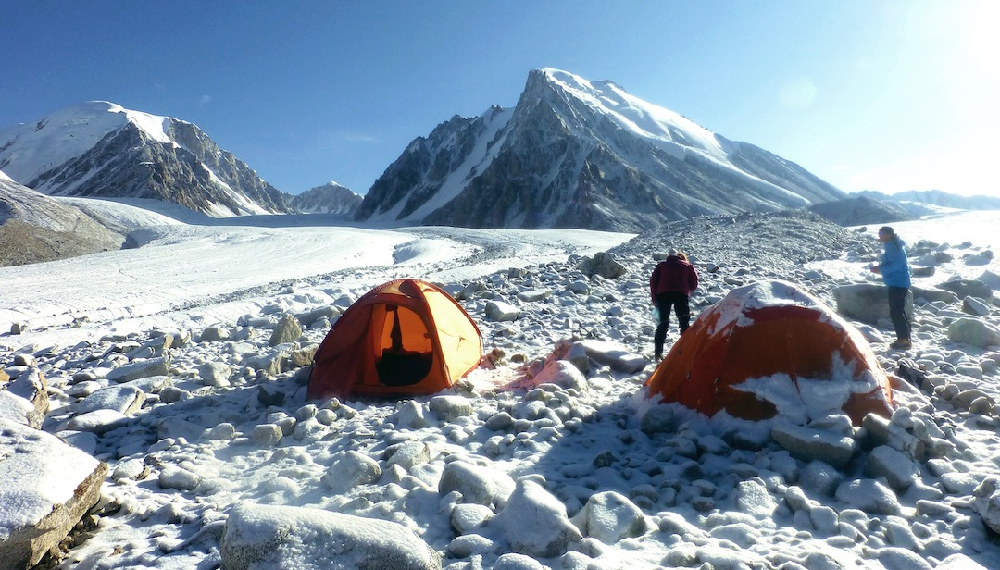

<div class="portfolio-single-load clearfix">
    <div class="custom-full-width-box">
        <div class="custom-container">
            <div class="custom-row align-items-center">
                <div class="custom-image-column">
                    
                </div>
                <div class="custom-text-column">
                    <h2 class="custom-heading">Shuijerab Campsite</h2>
                    <p class="custom-paragraph">
                        Shuijarab is the summer herding settlement of the Shimshali people. Shepherds from Shimshal Valley stay here for 3-4 months with their, Yaks, Goats, and sheep.
                    </p>
                </div>
            </div>
        </div>
    </div><!-- .custom-full-width-box end -->

</div><!-- end single-project -->
